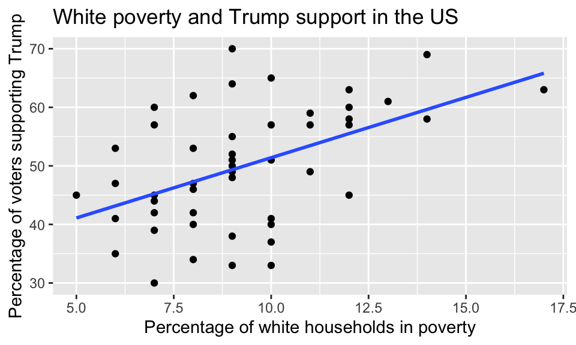
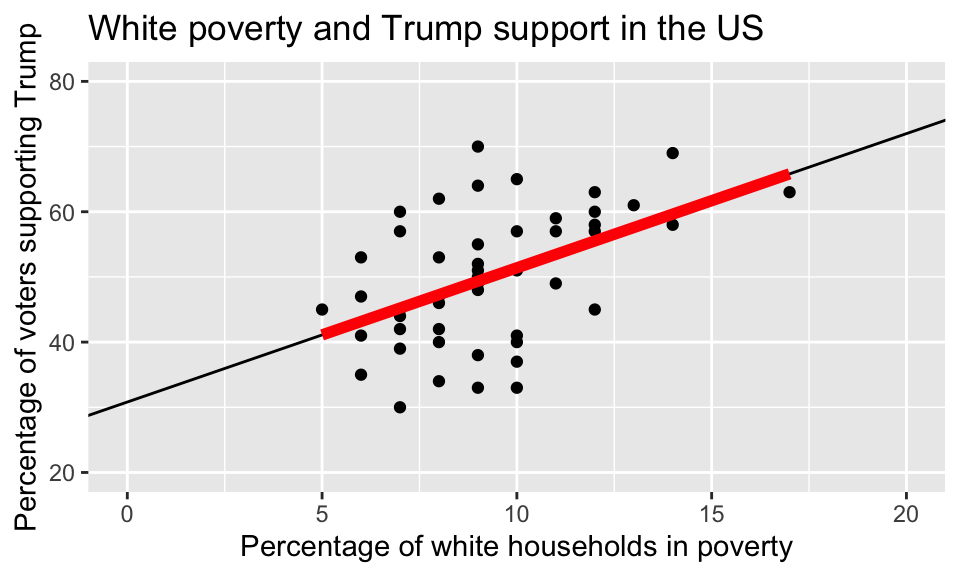
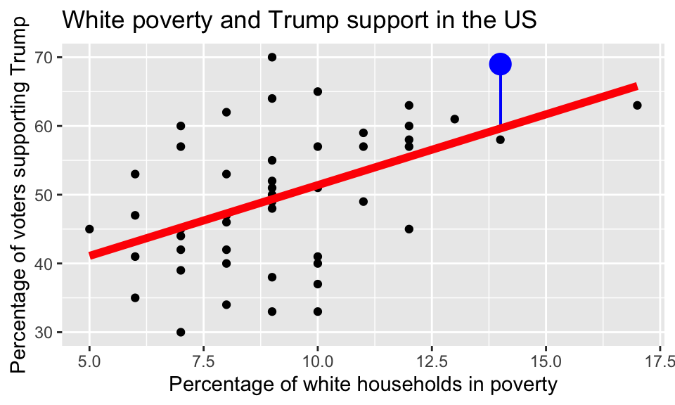

library(dplyr)
library(ggplot2)
library(readr)
library(moderndive)Lab 6: Correlation and Basic Regression
Background
For this lab you will first run through an example of a simple linear regression, answering a few questions on the way. Then you will work through a regression analysis independently.
We will look at some demographic data from the fivethirtyeight package recorded for 48 voting areas in the US states just after the 2016 presidential election. We will investigate which variables within those regions might be tied to the percentage of US voters that supported Donald Trump, and in turn, which variables might be useful to predict Trump support in other regions (i.e. to a wider US population).
Setup
Load packages
We will read the data in with the readr package, explore the data using the dplyr package and visualize it using the ggplot2 package. The moderndive package includes some nice functions to show regression model outputs.
The data
Run the following in a code chunk to load the data from where it is published on the web.
trump <- read_csv("https://docs.google.com/spreadsheets/d/e/2PACX-1vT8qHdvTPaRc62hU94ShBcSh04HP3c11b6XZIPMiUDGuwPtifpP7QhHdSHS2YgTRMRTgfUmBYq-L3ZT/pub?gid=1217616678&single=true&output=csv")Take a moment to look at the data in the viewer or by using glimpse(). The explanatory variables include:
hs_ed- the percentage of the adults in the region with a high school education.poverty- the percentage of the “white” households in the region in poverty.non_white- the percentage of humans in a region that identify as a person of color.
The outcome variable trump_support is the percentage of votes for Trump in 2016 in each region.
Observe that all percentages are expressed as values between 0 and 100, and not 0 and 1.
An Example/Demo
Visualization
We will start by investigating the relationship between white poverty levels and support for Trump.
We’ll do this by creating a scatterplot with trump_support as the outcome variable on the y-axis and poverty as the explanatory variable on the x-axis. Note the use of the geom_smooth() function, that tells R to add a regression line. While the points do scatter/vary around the blue regression line, of all possible lines we can draw in this point of clouds, the blue line is the “best-fitting” line in the sense that it minimizes the sum of the squared residuals (see moderndive 5.3.2 for a fuller explanation).
ggplot(data = trump, aes(y = trump_support, x = poverty)) +
geom_point() +
geom_smooth(method = "lm", se = FALSE) +
labs(x = "Percentage of white households in poverty",
y = "Percentage of voters supporting Trump",
title = "White poverty and Trump support in the US") 
Exercise 1
Does the relationship appear to be positive or negative? Does it look to be reasonably linear?
The correlation coefficient (r)
We can numerically quantify the strength of the linear relationship between the two variables with the correlation coefficient. The following tells R to summarize() the correlation coefficient between the numerical variables poverty and trump_support. Note that the correlation coefficient only exists for pairs of numerical variables.
trump %>%
summarize(r = cor(trump_support, poverty))# A tibble: 1 × 1
r
<dbl>
1 0.486Running a linear regression model
In R we can fit a linear regression model (a regression line), like so:
poverty_mod <- lm(trump_support ~ poverty, data = trump)Note that:
- the function
lm()is short for “linear model” - the first argument is a formula in the form
y ~ xor in other wordsoutcome variable ~ explantory variable.
- the second argument is the data frame in which the outcome and explanatory variables can be found.
- we SAVED THE MODEL RESULTS as an object called
poverty_mod
This object poverty_mod contains all of the information we need about the linear model that was just fit and we’ll be accessing this information again later.
Get the regression table
The get_regression_table() function from the moderndive package will output a regression table. Let’s focus on the value in the second column: an estimate for 1) an intercept, and 2) a slope for the poverty variable.
get_regression_table(poverty_mod)# A tibble: 2 × 7
term estimate std_error statistic p_value lower_ci upper_ci
<chr> <dbl> <dbl> <dbl> <dbl> <dbl> <dbl>
1 intercept 30.8 5.22 5.90 0 20.3 41.3
2 poverty 2.06 0.545 3.78 0 0.961 3.16We can interpret the intercept and poverty slope like so:
- When the poverty level is 0, the predicted average Trump support is 30.81%
- For every increase in poverty level of 1 percentage point, there is an associated increase in Trump support of 2.059 percentage points.
Revisiting the plot from earlier, we can see that the best-fit line hits the y axis at 30.8064 (if we extend it). This is the intercept…the y value at which poverty = 0 (note, a value that is sadly not close to the range of values for “percentage of white households in poverty”).

Exercise 2
We found a positive correlation coefficient. Is it reasonable for us to conclude that social policies that increase white poverty will cause an increase in Trump support? Explain why or why not?
Making predictions
Based on the R output of our model, the following is our least squares regression line for the linear model:
\(\widehat{trump\_support} = 30.806 + 2.059 \times poverty\)
We can use the line from our graph of the poverty, trump_support relationship to visually make predictions…for instance at 15% white poverty, the line shows a value of just over 60% Trump support.
To get a more accurate prediction, we could actually plug 15% into the regression equation like so:
y_hat = 30.8064 + 2.0591 * 15
y_hat[1] 61.6929Exercise 3
What percent of Trump support would you expect at a value of 6% white poverty?
Exercise 4
Do you think it is a good idea to predict Trump support at 85% white poverty, based on this regression equation? Explain your reasoning.
Residuals
Recall that model residuals are the difference between the observed values in your data set and the values predicted by the line:
\(\text{residual} = y - \hat{y}\)
For instance, below, one data point is highlighted in blue…the residual is the difference between the y value of the data point (here 69), and the y value predicted by the line (roughly 59). Here the residual is roughly 10 (\(69 - 59 = 10\)). The regression equation has under-estimated Trump support in this voting area.

The following function get_regression_points() gives you the fitted (also known as predicted) value for every data point, and the residual for every data point. The first row in the output is the first data point. You can see that in this voting area Trump support was 30%, white poverty was 7%, the regression equation predicted 45.22% Trump support, and the residual was -15.22 (\(30 - 45.22\)).
get_regression_points(poverty_mod)Put your skills to practice independently!
Use the same trump data set for the following questions:
Exercise 5
Generate a scatterplot with a best-fitting line with non_white as the explanatory variable, and trump_support as the response. Be sure to include an informative title and axis labels to your plot. This will help contextualize it.
Exercise 6
Do you expect the correlation coefficient (for non_white and trump_support) to be positive or negative? Test your prediction using R (it is OK if your expectation was wrong!).
Exercise 7
Run a linear regression using non_white as the explanatory variable, and trump_support as the outcome variable. Interpret the Intercept and slope estimates.
Exercise 8
Make a numerical prediction for the level of Trump support for a region that has 70% of humans that identify as a person of color. In other words, use math not a visual prediction.
Exercise 9
Based on the evidence you have so far (scatterplots and correlation coefficients), which of the explanatory variables we have considered (non_white or poverty) seems to be a better explanatory variable of Trump support? Explain.
Exercise 10
If you saw the regression line and not the actual data:
A. What would your prediction of Trump support be for a region in which 61% of the people identify as non-white?
B. Would your prediction be an overestimate or an underestimate (compared to the observed data), and by how much?
C. In other words, what is the residual for this prediction?
Submission
Finally, save your html file and submit it to me on Canvas.
And you’re done!